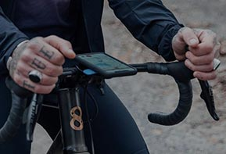

Színes repertoáromat a grafikai design-al kezdeném, mely tartalmaz logót, meghívót, névjegykártyát és igazából körülbelül bármilyen grafikai munkát.
A UI-UX design-ba körülbelül fél éve vágtam bele, a jelen weboldalon kívül elkészült projektem még nincs, folyamatban lévő munkát nem tehetek ki.
Foglalkozok továbbá alkatrészkkel, 3d tervzéssel. Ezzel a területtel már az egyetem előtt is foglalkoztam valamelyest, de az alábbiakban egy friss, folyamatban lévő projektembe kaphatsz betekintést.
Kerékpár kormányba telepíthető powerbank

Mivel sokat tekerek és ezt a mobiltelefonommal loggolom, így kézenfekvő hogy ne egy redundáns rendszert építsek ki kerékpáros computerrel, hanem továbbra is a mobiltelefonomat használjam mivel utóbbinak van elég sok előnye és lehet hozzá érzékelőket is csatolni, csak úgy mint a kerékpáros fejegységhez. Viszont van egy elég nagy hátránya is, ez pedig az akkumulátor élettartam, melyet kormányra téve bekapcsolt kijelzővel elég gyorsan vesztene.
Erre a problémára kezdtem megoldást keresni a piacon, de mindegyik vagy nem esztétikus egy országuti kerékpáron, vagy nem kényelmes használni. Ezeket a problémákat szeretném kiküszöbölni egy saját, kormányba rejthető powerbankkal, mely egyszerűen cserélhető AA formátumú cellákat használ, így ha út közben lemerül és nincs lehetőség tölteni, akkor elegendő a legközelebbi kisboltban venni néhány elemet és megint van energia. Megoldásom továbbá a könnyen eltávolítható akkumulátoroknak köszönhetően kényelmesen tölthető otthon is, ugyanis nem kell a bicikliben lenniük töltéskor, a folyamat bent a melegben otthon elvégezhető (és a hideg sem tesz jót az kkumulátoroknak, így ezért is érdemes őket bent tárolni).
Nagy kihívás, hogy koskormányhoz kell terveznem, melyben az egyenes kormánnyal szemben nem fér el egyszerűen egy egyenes hengeres test így ezt is számításba kell vennem. Olyan eszközt célom létrehozni, mely keresztkompatibilis a lehető legtöbb szabványos kormánnyal legyen az kos vagy egyenes. Jelenleg a projekt kezdeti fázisban van, ez az oldal frissülni fog az előrehaladással.